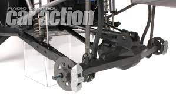

De traxxas UDR is een best grote rc (radio control) auto. Hij kan rond de 90 km per uur. Wat de Traxxas UDR exstra buzonder maakt is dat de rc auto een solid rear axle heeft de meeste rc auto hebben dat niet zie foto hier onder. En de Traxxas UDR body/kap zit vast met schroeven zo ziet de auto er uit met kap en zo zonder.
Dit is bij de traxxas udr de slolid rear axle zo als in de foto te zien is.
Bij een de meeste rc auto's is het zo dat er achter gewoon twee draag armen zijn zo als in de foto te zien is.
Zonder kap ziet de Traxxas UDR er zo uit.
Dit is de Traxxas UDR met custom kap.
Drie belangrijken dingen die je moet doen als je met een udr rijdt/bezit.
Belangrijke onderdelen locatie Traxxas UDR.
| Voorkant UDR | Midden UDR | Achterkant UDR |
|---|---|---|
| Bumper | Motor&ESC | Solid rear axel |
| Draag armen | Bodemplaat | Sway arms |